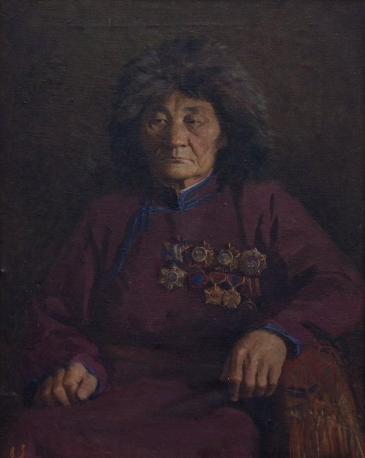
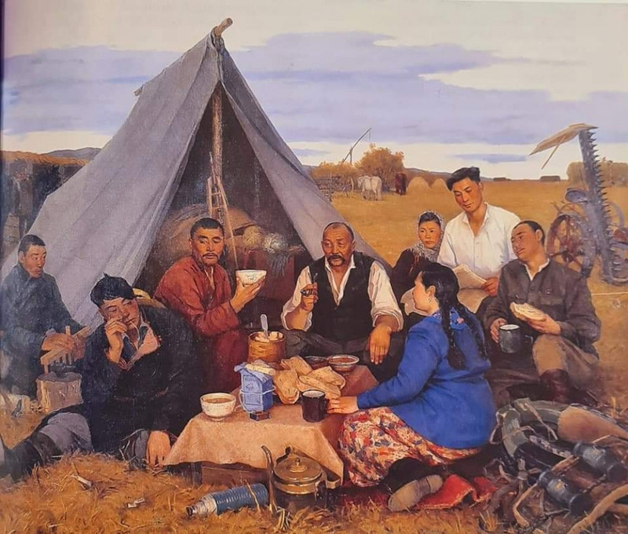

picture1 name
This is the portrait of famous painter Odon. Despite having profession and career of agricultural engineer, his enormous painting skill made him legendary painter of the 20th century. His pictures shows simplicity of life of the farmer and agricultural industry.
Rest after the workday
One of painter Odon's greatest work was the painting named "Rest after the workday". The painting showed real the atmosphere of agricultural workday as simple and real without any exaggeration. He drew it both as an artist and a farm worker.
